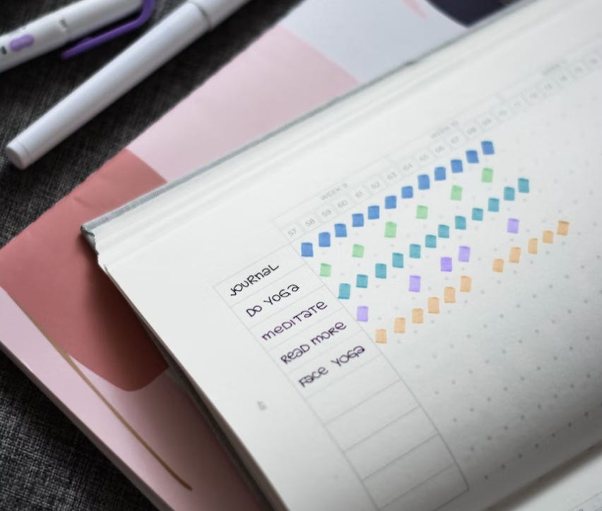

Veränderung braucht Gewohnheit
Wie schaffen Sie es, die Dinge zu verändern, die Sie sich vornehmen. Wenn meine Kunden mich für ein Training oder eine Optimierung ihrer Büroprozesse buchen, geht es immer darum, dass wir eine Veränderung erarbeiten. Das Verhalten am Arbeitsplatz oder im Team soll anders werden. Das ist zumindest der Vorsatz. Doch leider fällt dessen Umsetzung oft schwer, sehr schwer sogar. Gibt es denn keinen Trick, dass es leichter wird? Doch, den gibt es: Veränderung braucht Gewohnheit.
Mein Mann hat darüber unter dem Stichwort Habitification in seinem Blog geschrieben. Ich möchte den vorgestellten Ansatz aufgreifen und hier für Sie für die Arbeit im Office etwas konkretisieren.
Das Neue zur Gewohnheit machen
Der Trick, um eine Veränderung verlässlicher umzusetzen besteht darin, sie nicht mit einem großen Sprung erreichen zu wollen, sondern sich einen Weg aus vielen kleinen Schritten zu überlegen. Das Neue muss schnellstmöglich zur Gewohnheit werden, selbst wenn die zunächst nur klein und die Veränderung damit noch nicht vollständig umgesetzt ist.
Das Ziel
Einen Weg beschreiten Sie auf ein Ziel hin. Er soll Sie dorthin führen. Bei der Veränderung ist es deshalb zunächst wichtig, dass Sie sich darüber im Klaren sind, wie denn morgen Ihre Welt anders aussehen soll. Was ist eigentlich Ihr Ziel?
Beispiele aus meinem privaten Leben sind derzeit:
- Ich möchte nach längerer Zeit körperlicher Passivität wieder fit werden, um Bergwanderungen ohne Kraft- und Konditionsprobleme mitmachen zu können. Ein Urlaub in Island steht an. Den will ich aktiv genießen können.
- Ich möchte Spanisch so beherrschen, dass ich mich in einem spanischsprachigen Land in Alltagssituationen ohne Google Translate verständigen kann.
Beispiele aus dem beruflichen Leben meiner Kunden sind:
- Umstellung des Büros auf Papierlosigkeit
- Koordination der Zusammenarbeit mit Microsoft Planner als gemeinsames Aufgabenboard
Das sind greifbare Ziele, auch wenn ihnen noch eine gewisse Konkretheit fehlt. Wer sie sich vornimmt, wird jedoch glauben erkennen zu können, wann die Ziele erreicht sind. Das soll für das hiesige Thema ausreichen.
Der Weg – Veränderung durch Gewohnheit
Aber was nun? Schön, dass es eine Ziellinie gibt — doch wie kommt man ihr näher? Mit Gewohnheiten!
Sobald klar ist, wohin die Reise gehen soll, empfehle ich die Frage: “Wie kann regelmäßig auf das Ziel eingezahlt werden?” Die Währung für diese Einzahlung ist allerdings nicht Euro, sondern Aufmerksamkeit. Wie kann also regelmäßig und verlässlich immer wieder der Veränderung mit Blick auf das Ziel Aufmerksamkeit geschenkt werden?
Es geht darum, den Weg zum Ziel mit “Gewohnheitsbausteinen” zu pflastern. Wie im erwähnten Artikel erklärt, sind die definiert durch:
- Wann? Dazu gehört auch: Wie häufig?
- Wie lange?
- Was?
Für meine persönlichen Ziele fallen auch Ihnen bestimmt sofort Vorschläge ein. Meine Gewohnheiten sind Ihren Vorstellungen wahrscheinlich recht ähnlich:
- Fitnessziel: Mindestens 4 Mal die Woche mache ich am Morgen 15-30 Minuten ein Sportprogramm bestehend aus Übungen für Kondition, Kraft und Beweglichkeit. Unterstützung hole ich mir bei Youtube und Fitness-Apps.
- Sprachziel: Jeden Morgen mache ich min. 15 Minuten Spanisch mit der Duolingo-App.
Diese Ziele könnte ich nicht mit einem einzigen Sprung erreichen. Ich muss die nötigen Fähigkeiten langsam entwickeln. Das braucht Zeit, das braucht Beständigkeit. Deshalb ist es wichtig, ein Gegenüber zu haben, dem ich mich “rechenschaftspflichtig” fühle und das mich motiviert. Mein Accountability Partner ist in diesem Fall mein Mann. Er teilt mit mir diese Ziele und die Gewohnheiten. So können wir uns gegenseitig anspornen und Vorbild sein.
Eine Veränderung von 15-30 Minuten ist klein genug, um nicht zu sehr mit den sonstigen Anforderungen des Alltags zu kollidieren. Von dem ist also wenig Widerstand zu erwarten. Das ist sehr zu bedenken bei der Wahl Ihrer Gewohnheiten.
Andererseits sind die Veränderungen groß genug, um inhaltlich einen Unterschied zu machen. Ich fühle körperlich, wie ich mich positiv verändere. Und in der App, mit der ich die Vokabeln aus den Duolingo-Lektionen vertiefe (Repetico) sehe ich, wie mein Vokabelschatz wächst.
Habittracker als Motivationshilfe
Als zusätzliche Motivationshilfe benutzen wir eine Habit-App, in der wir abhaken, wenn wir einer Gewohnheit nachgekommen sind. Die App Streaks hat mir am besten gefallen, aber es gibt viele andere in diesem Bereich. Es mag komisch klingen, doch wenn ich beim Abhaken sehe, dass ich einen Streak von z.B. 34 Mal auf mein Konditionsziel hin habe… dann fühle ich mich gut. Aber einem analogen habit journal steht natürlich auch nichts im Wege:

Foto von Prophsee Journals auf UnsplashWas hat mein Privatleben mit Ihrem Berufsalltag zu tun? Ich bin überzeugt, dass sich das Erfolgsrezept übertragen lässt: Mit kleinen Gewohnheiten lassen sich große Ziele erreichen.
Beispiel 1: Papierloses Büro
Fangen wir mit dem Beispiel des papierlosen Büros an. Was kann ein Unternehmen an kleinen Gewohnheiten einführen, um papierlos zu werden? Es scheint so, dass Gewohnheiten gar nicht nötig seien. Der Chef muss doch einfach nur anweisen “Ab morgen wird nicht mehr gedruckt und alles wird gescannt. Dort drüben stehen die neuen Scanner. Auf gehts!” Einige Chefs glauben auch noch, dass es so funktioniert — nur die Praxis zeigt, dass solche hau-ruck-Maßnahmen meist scheitern. Sie laufen schlicht gegen den Widerstand etablierter Arbeitsabläufe. Und es gibt noch keine Erfolgsgeschichte, die motivieren könnte, auch weiterzumachen, wenn es mal frustrierend sein sollte.
Nein, ich glaube nicht an den Schalter, der sich bei so einem Ziel umlegen lässt. Es braucht auch keinen Masterplan — sondern eine Idee davon, wie kleine dauerhafte Veränderungen in Form von Gewohnheiten das Ziel langsam erreichen lassen.
Natürlich sind diese Gewohnheiten auf das konkrete Unternehmen abzustimmen. Aber ich mache mal ein Vorschläge als Beispiele dafür, was ich meine:
- Reflexion: Eine Gewohnheit, die ich für grundlegend bei jeder Veränderung halte, ist die Reflexion darüber, wie es um den Fortschritt steht. Wer sich verändern will/soll — ob Einzelperson oder Team oder Abteilung — nimmt sich regelmäßig Zeit, um zu schauen, wie es damit geklappt hat seit der letzten Reflexion.1Zum Einstieg könnten es 15-30 Minuten alle 1-2 Wochen sein, um die Papierlosigkeit wirklich zu etablieren. Diese Reflexionsrunde ist auch der Ort, an dem über die weitere Entwicklung von Gewohnheiten entschieden wird.
- Eingehende Post klassifizieren: Selbst ohne schon einen Scanner zu haben, kann das papierlose Büro gestartet werden. Eine ganz simple Gewohnheit wäre, wenn die Papierpost kommt, sie sofort in drei Haufen zu teilen. Jeden Tag werden die Haufen kurz z.B. mit Smartphone-Foto dokumentiert für die Reflexion.
- Haufen 1 sollte gescannt werden. Dieser Haufen kann noch weiter differenziert werden in
- An der Quelle digitalisieren: Wo immer es möglich ist, sollten die Absender von Papierpost kontaktiert und gebeten werden, in Zukunft die Dokumente digital zu senden.2
- Scannen: Nur, wo eine Digitalisierung an der Quelle unmöglich ist, muss später wirklich gescannt werden.
- Haufen 2 kann nicht gescannt werden. Dieser Haufen sollte so gering wie möglich ausfallen.
- Haufen 3 ist Müll. Diesen Haufen sofort entsorgen und versuchen, ihn an der Quelle zu vermeiden, z.B. durch Abbestellen nicht mehr erwünschter Kataloge usw.
- Haufen 1 sollte gescannt werden. Dieser Haufen kann noch weiter differenziert werden in
Natürlich könnte ich noch weitere Gewohnheiten im Zusammenhang mit der Einführung der Papierlosigkeit nennen. Doch es ist ja gerade der Trick der Habitification sich nicht zu überlasten. Es soll in kleinen, “umweltverträglichen” Schritten vorangehen. Widerstand der Umwelt ist zu vermeiden.
Diese beiden Gewohnheiten halte ich für sehr “umweltverträglich”:
- Die Klassifizierung der Post dauert jeden Tag höchstens 5 Minuten.
- Die wöchentliche oder bi-wöchentliche Reflexion dauert höchstens 30 Minuten.
Beides sollte sich in den Alltag integrieren lassen. Und ist das erfolgreich 2, 3, 4 Wochen geschehen… dann und erst dann sollte eine weitere Gewohnheit hinzutreten. Auf diese Weise kann das, was zunächst neu war, sich schon etablieren. Wenn die nächste Gewohnheit eingeführt wird, erscheint sie nicht mehr als zusätzliche Last zu einer schon existierenden. Denn die vorherige ist ja keine Last mehr, sondern neue Normalität.
Die Reflexion ist eine Gewohnheit, die an einen Zeitpunkt gekoppelt ist; sie wird im Kalender geplant, z.B. jeden Montag morgen um 11:30 für 30 Minuten.
Die Klassifizierung hingegen kann an einen Zeitpunkt gekoppelt sein, z.B. jeden Morgen um 11:00, weil dann garantiert die ganze Post eingetroffen ist. Oder die Gewohnheit wird durch den Posteingang getriggert, der um 10:45 oder 9:30 sein kann. Sicherzustellen ist in jedem Fall, dass dann dafür genügend Zeit zur Verfügung steht.
Beispiel 2: Microsoft Planner benutzen
Noch mehr als bei der Papierlosigkeit liegt es nahe zu glauben, dass die Nutzung eines Tools “befohlen werden kann”. Dann wird eben ab nächsten Montag ausschließlich, nur noch und zwar von allen der Planner benutzt. Doch das widerspricht der Praxiserfahrung, egal wie gern es Manager auch hätten, dass es so funktioniert. Nein, selbst eine Tool-Einführung geschieht am besten schrittweise.
Damit meine ich nicht, dass zuerst eine Evaluation stattfindet, anschließend nur eine kleine Gruppe das Tool einsetzt und erst am Ende ein Rollout an alle stattfindet. Das ist sicher auch zu empfehlen — doch schon für die kleine Gruppe, die Versuchskaninchen, stellt die Nutzung wahrscheinlich einen massiven Eingriff in ihren Alltag dar. Damit bereits dort der Widerstand gering ist, sollte ein Weg aus Gewohnheitsbausteinen gelegt werden.
- Reflexion: Auch hier ist wieder als erste und grundlegende Gewohnheit die der Reflexion zu nennen. Ohne den Zug der geplanten Reflexion ermattet der Wille schnell, sich der Veränderung zu stellen. Und ohne Reflexion wird der Weg zum Ziel weniger umwegarm, als er sein könnte. Umwege und auch Verzögerungen lassen sich nicht vermeiden; doch wenigstens sollten die nicht überraschen und nicht unreflektiert bleiben.
- Tagebuch schreiben: Was eine erste Gewohnheit sein kann, um sich mit dem Tool zu beschäftigen, hängt sehr vom Kenntnisstand derer ab, die damit arbeiten sollen. Kennen sie das Tool schon? Wie steht es um die allgemein digital literacy? In diesem Beispiel gehe ich einmal davon aus, dass — wie so oft — bisher kein Umgang mit dem Tool Microsoft Planner gepflegt wurde, obwohl das Unternehmen schon lange Microsoft 365 Lizenzen eingekauft hat. Es wäre deshalb viel verlangt, würde Planner sofort “scharf geschaltet” und müsste im Arbeitsalltag beitragen. Stattdessen kann eine Annäherung überhaupt an das Tool und den Umgang mit seiner Datenorganisation in Spalten und Karten weniger belastend und “spielerisch” stattfinden: Alle, die zukünftig Planner benutzen sollen, machen dort täglich nur kurz einen “Tagebucheintrag”. Die Aufgabe ist lediglich, in ein paar Sätzen zu beschreiben, was an dem Tag an Aufgaben erledigt wurde. Dafür kann Planner z.B. mit je einer Spalte für jeden Mitarbeiter eingerichtet werden; oder Planner bekommt Spalten für die Tage in der Periode, für die man sich diese Gewohnheit vorgenommen hat. In jedem Fall sollte die gewohnheitsmäßige Aufgabe inhaltlich trivial sein, damit mit dieser Gewohnheit vor allem der Umgang mit der Form eingeübt wird: Planner-App öffnen, in Planner orientieren, in Planner eine Karte anlegen und füllen.3
Beide Gewohnheiten halte ich wieder für “umweltverträglich”:
Regelmäßige Reflexion als Baustein des Fortschritts
- Die Reflexion findet hier am besten zunächst einmal wöchentlich statt. Gemeinsam kann der Planner betrachtet werden. Erfolgreiche Eintragungen werden als Erfolge gefeiert. Fehlende dienen der Justierung: Was hat gefehlt, damit die Gewohnheit eingehalten werden kann? Wie kann es in der nächsten Woche besser laufen?
- Die Tagebuchführung ist eine tägliche Gewohnheit, die mit 5-10 Minuten nur wenig belastet. Inhaltlich ist sie trivial. Formal braucht sie vielleicht ein wenig Mühe. Aber: Dafür sollte, nein, muss vor dem Feierabend eben einfach Zeit sein (oder zu Beginn des nächsten Arbeitstages). Wenn die Reflexion feststellt, dass die Mitarbeiter sich schon dazu nicht überwinden können… dann ist das auch eine wertvolle, wenn auch ernüchternde Erkenntnis.
Sobald die Reflexion erkennt, dass die Bedienung des Tools keine Probleme mehr macht, kann die Tagebuchführung selbstverständlich durch eine andere, inhaltlich relevantere Gewohnheit ersetzt werden. Vielleicht sind in der Reflexion schon Ideen dafür entstanden, wo der Planner für Überblick sorgen könnte: Ist es die Jahresplanung oder eher ein Projekt? Taugt er für die Zusammenarbeit im Team oder mehr für die Selbstorganisation? Die Reflexion ist der Ort, das zu besprechen und den nächsten Gewohnheitsbaustein auf dem Weg zum Ziel zu verlegen.
Die Voraussetzung
Zum Abschluss will ich eine Voraussetzung für erfolgreiche Veränderung nicht unerwähnt lassen, die ich auch aus persönlicher Erfahrung für essenziell halte: Stabilität.
Es braucht bei all der Arbeitsalltagshektik ein Mindestmaß an Konstanz. Denn ohne die haben neue Gewohnheiten es sehr schwer, sich irgendwo “einzunisten”. Im Kalender kann dann nichts verlässlich platziert werden und/oder es gibt keine absehbaren Trigger für das Neue.
Meine ganzen schönen Gewohnheiten für den Konditionsaufbau und den Sprachkompetenzerwerb laufen zum Beispiel regelmäßig gegen eine Wand, wenn ich auf Geschäftsreise bin. Es gibt dann keinen Morgen, den ich in Ruhe selbst gestalten kann. Entweder ich sitze im Zug oder beim Kunden. Ich schaffe es in der Zeit nicht, die Gewohnheiten einfach nach vorne zu verlegen und z.B. den Wecker 30 Minuten früher auf z.B. 5:30 stellen, um den Tag mit Spanisch und Fitness im Hotelzimmer zu beginnen. Manchmal kann ich mich noch zu einer Lektion am Abend aufraffen — doch es ist so viel schwieriger in einem anderen Umfeld als zuhause.
Eine Form von Stabilität können Accountability Partner bieten, doch die Stabilität zeitlicher Strukturen in einem konstanten Umfeld ist nicht zu unterschätzen. Wenn die aber vorhanden ist, wie bei den meisten Arbeitsplätzen, dann hilft die Gestaltung von Gewohnheiten einer Veränderung sehr auf die Beine. Seien Sie dabei nur nicht zu ehrgeizig: lieber kleine Gewohnheiten, die über die Zeit aufeinander aufbauen und sich in den Alltag gut integrieren lassen, als große, an denen Sie scheitern.
Dieser Artikel erschien zum ersten Mal in meinem Newsletter bei Substack hier im January 2023. Dort finden Sie auch weitere Artikel und können den Newsletter per E-Mail abonnieren.
1 Bei den geschilderten Veränderungen im privaten Leben ist diese Reflexion eingebaut in die Gewohnheit: Wir sind zu zweit und wir nutzen die Streaks-App, die uns erinnert, wenn wir unseren Gewohnheiten nicht nachkommen. Außerdem ist der Fortschritt für uns im wahrsten Sinn des Wortes spürbar. Bei anderen Veränderungen jedoch wäre auch im privaten Bereich eine spezielle Reflexion angebracht.
2 Um die Klassifikationsgewohnheit wirklich klein zu halten, muss zunächst auch noch gar kein Versuch unternommen werden, die Post selbst zu digitalisieren oder von den Quellen digitale Dokumente zu erbitten. In einem allerersten Schritt genügt es, zu dokumentieren. Damit wird schon der Anspruch aufgebaut, überhaupt an Papierlosigkeit zu denken. Und gleichzeitig können die, die noch skeptisch sind, in gewohnter Weise weiterarbeiten.
3 Das mag trivial und nicht der Übung wert klingen. Doch es gibt viele Organisationen, die sich am besten auf diese Weise an ein neues Tool herantasten. Wo Menschen heute schon überfordert sind, darf das Neue nicht noch weiter belasten. Es braucht deshalb sehr, sehr kleine Schritte in die Veränderung.
Weitere Artikel

Regeln für KI im Office
ChatGPT & Co haben sich schnell in die Herzen und Alltag von vielen Menschen im Berufs- und Privatleben gespielt. Diese neuen Werkzeuge eröffnen uns viele Chancen, nicht nur effizienter zu werden, sondern auch kreativer. Aber …

KI als Copilot für die Assistenz
KI in Form von ChatGPT & Co sind hervorragende neue Werkzeuge im Office-Alltag, um produktiver und ja, auch kreativer, zu werden. Neugier statt Angst ist angezeigt im Umgang mit diesen Werkzeugen, die wie andere Werkzeuge auch …